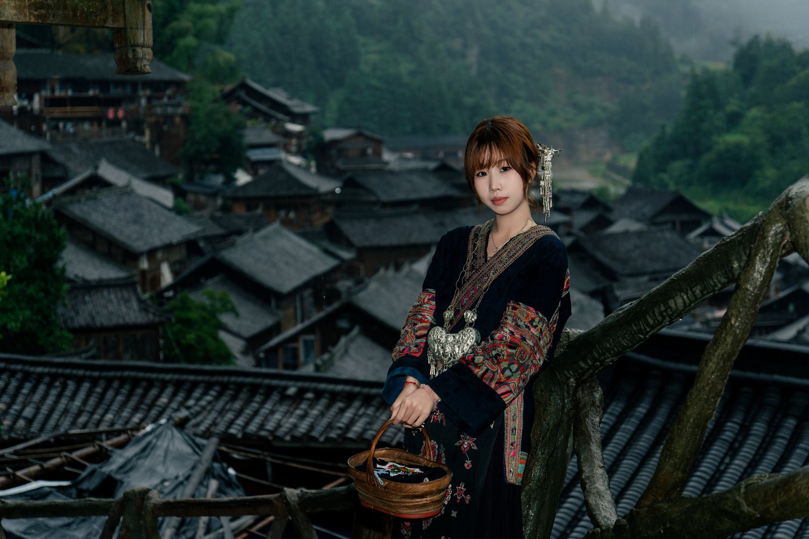
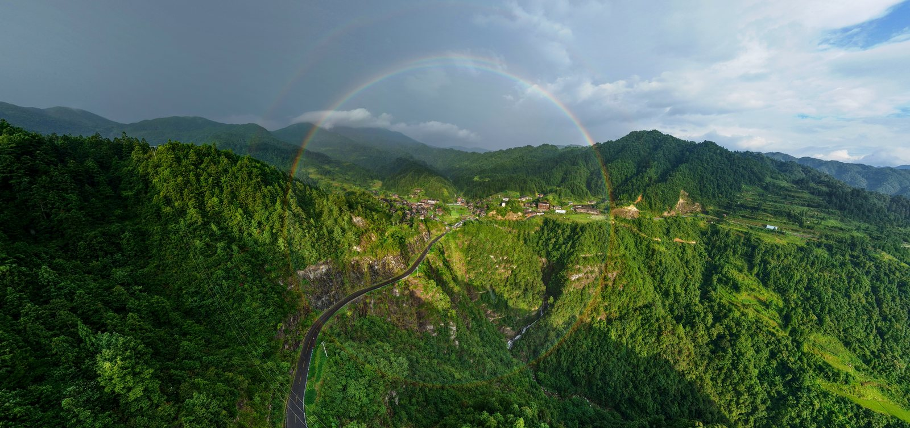
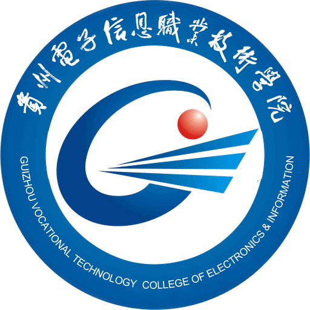

旅拍摄影师 & 新媒体创作者
你好，我是杨星星
记录光影，
也传递温度。
从贵州苗寨出发，用镜头捕捉真实，
用内容，让每一个平凡的瞬间被看见。
⌖ 贵州 · 雷山 保持观察，持续创作



THROUGH MY LENS2026
贵州 · 郎德苗寨山水之间，人间日常。
0103 PHOTOGRAPHY BY YANG XINGXING
01 / ABOUT ME 关于我
镜头里的观察者，
故事里的创作者。
Yang Xingxing ↗
我是杨星星，苗族，来自贵州雷山。从影视动画到网络与新媒体，从西江千户苗寨到郎德苗寨，我一直在用影像探索人与生活的连接。
两年的旅拍一线经历，让我学会观察细节、与人沟通，也学会在不同的光线与场景中，寻找真实而有温度的表达。现在，我在贵州财经大学继续学习，把镜头里的故事讲给更多人听。
摄影摄像新媒体运营内容创作
- 目前就读
- 贵州财经大学 · 网络与新媒体本科
- 语言能力
- 国语 · 英语
- 个人特质
- 创新力 · 执行力 · 持续学习 · 团队合作
02 / SELECTED WORKS 精选作品
走过的路，拍过的光。
每一次快门，都是与世界的对话。2026 COLLECTION ↙
让故事，动起来。
MOTION & EXPERIMENTS校园 AI 视频
AI 影像 / 202603 / WHAT I DO 专业能力
从一个想法，
到一份完整的表达。
拍摄、剪辑、策划、传播。
让创意在每个环节落地。
摄影摄像
旅拍写真 · 人像与风光
现场跟拍 · 数码摄影
摄影器材现场引导
短视频创作
创意短视频 · 微电影
影视广告 · 脚本策划
Premiere剪映
后期制作
影像调色 · 人像精修
海报设计 · 视觉排版
PhotoshopLightroom
新媒体运营
内容策划 · 平台运营
图文排版 · 数据分析
Canva秀米 / 135
04 / MY JOURNEY 经历与成长
扎根生活，
向光生长。
镜头之外的每一步，
都在塑造镜头之内的我。
实践经历 EXPERIENCE
贵州郎德苗寨 · 粮仓老秀阁
负责游客写真拍摄与现场引导，把控拍摄节奏与出片质量；结合苗寨人文与自然场景，定制拍摄方案，提升体验与好评。
贵州西江千户苗寨 · 旅拍店
为游客定格旅途中的美好瞬间，熟练应对夜景、人流等复杂场景，保持稳定的出片质量。
黔东南迅捷通讯有限公司
负责凯里三星专卖店产品讲解、推荐与客户跟进，积累沟通表达与客户服务经验。
教育经历 EDUCATION
2025.09 — 至今
贵州财经大学
网络与新媒体 · 本科
新媒体内容创作 / 摄影摄像 / 短视频制作 / 数据新闻

2022.09 — 2025.06
贵州电子信息职业技术学院
影视动画 · 专科
影视动画 / 视听语言 / 动画设计 / 影视制作
05 / RECOGNITION 荣誉奖项
热爱，有迹可循。
每一份认可，都是继续创作的动力。国家级
国家励志奖学金
2022—2023 学年度↗省级
第十六届大广赛 · 短视频类影视广告 三等奖
第十六届↗省级
第十六届大广赛 · 短视频类微电影广告 三等奖
第十六届↗查看其他 5 项校级荣誉 ＋
校级
第十五届大广赛 · 短视频类影视广告一等奖
校级
第十八届师生职业技能比赛 · 创意短视频二等奖
校级
第十八届师生职业技能比赛 · 思政课微电影三等奖
校级
三等学业奖学金 · 2022—2023 学年度
校级